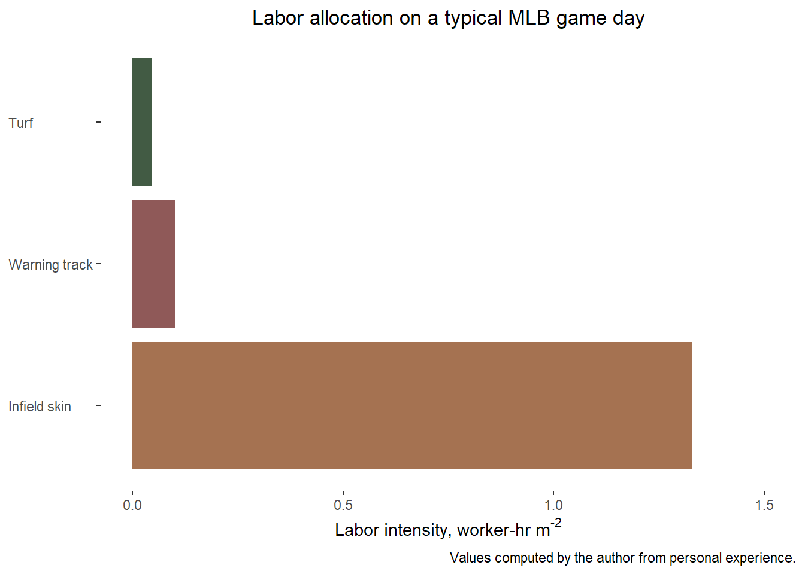
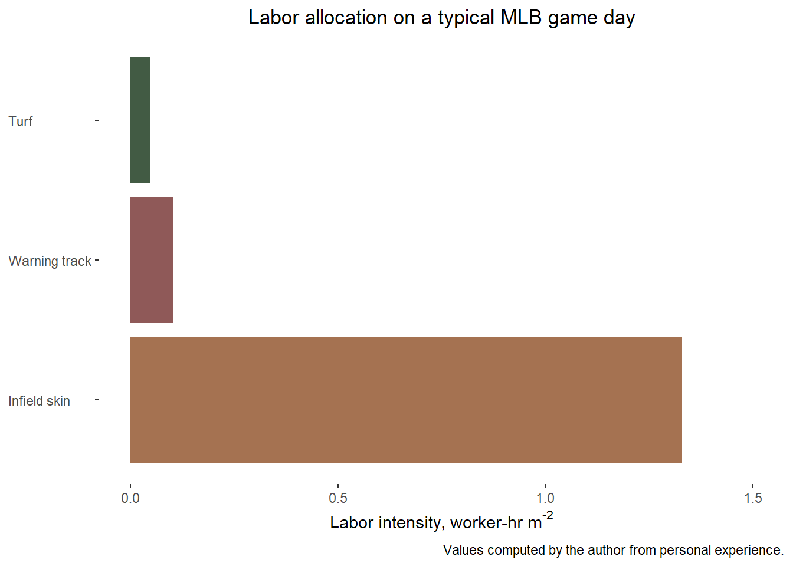

4 Review of literature
This literature review is organized into four sections to address the following topics:
4.1 Function and performance of baseball/softball infields
4.2 Soil behavior terminology and measures
4.3 Design and properties of artificial soil mixtures
4.4 Laboratory test methods pertinent to the research questions
4.1 Function and performance of baseball infields
Athletes engage with the playing surface in two ways: directly (by running, pivoting, and sliding) and indirectly (by fielding batted balls).
During play, forces are imposed to the infield skin by athletes feet and bodies, and by the ball. This section outlines the goals of a baseball grounds manager and prior scientific research (scant as it is) on this topic.
4.1.1 Qualitative description of the importance of the infield
A full-size baseball field occupies 1 ha. About 74% of this total area is surfaced with natural turfgrass or synthetic turf. An additional ~ 16% is occupied by the warning track, which is designed to alert players that they are nearing the wall. Only about 8% of the total playing surface is occupied by the infield skin. However, the majority of the game is played on this area, and at any given moment the all the offensive players, the four infielders, and the pitcher and catcher are standing on the infield skin. Because of its importance to athlete safety and performance, the infield skin consumes a majority of labor and material expenditures (see Figure 4.1 ).
 

Figure 4.1: A. Locations of players during a professional baseball game; note the paucity of players on turf (blue arrows) compared to bare soil/skin areas (red arrows). B. The infield skin consumes the majority of labor input despite comprising only ~8% of the playing surface.
4.1.2 Research on infield surface performance
Goodall et al. (2005) is the only published account of research on infield soil mixtures. The authors installed several soils which were commercially available within their region.
Brosnan et al. (2008) surveyed the surface conditions of the infield skin on extant playing fields at three maintenance levels. Particle size analyses were performed on soil sampled from each infield skin. The USDA soil texture of those samples is plotted in 4.2. These soils were sampled from the upper 13 mm and contained large granules of calcined clay infield conditioner; therefore, the texture measured with this method is coarser than the “true” texture of the base soil.

Figure 4.2: Infield soils suyveyed by Brosnan (2008a)
Additionally, Brosnan et al. published research on the infield skin’s role in athlete-to-surface interactions (2009) and ball-to-surface interactions (2011). Bulk density (\(\Large{\rho}\small{_{bulk}}\)) was shown to influence surface properties, although the range of bulk densities tested (1.2-1.8 Mg m-3) was beneath values typically encountered on infield skins (author’s personal observation; data not shown).
However, the work of Brosnan et al. (2009; 2011) was performed on a single soil material and focused on construction and maintenance practices rather than mix design.
4.1.3 Use of artificial soil mixtures on baseball infields
Baseball was first played in the early 19th century, but the definitive origins of the game are likely lost to history (Walker et al., 1994). The earliest recorded attempt to alter the physical properties of an infield soil were by Harry Wright in 1875. Wright and his contemporaries incorporated various materials into their infield soils to enhance stability, firmness, or drainage of the playing surface. Amendments included organic debris (straw, ashes) and and inorganic materials (sand, lime, cinders) (Morris, 2007).
Infield soil mixes were produced off-site and imported beginning in the 1960s ?Zwasksa?.
4.2 Soil behavior terminology and measures
Toughness is really the most defining feature of clay soil.
4.3 Design and properties of artificial soil mixtures
Natural soil materials are excavated and deliberately blended for many uses. Potting mixes and green roof media are the largest means of production by volume (reference ??). The purpose of blending multiple soil materials is to create a product having properties not exhibited by any naturally occurring soil material. Even if the desired properties could be found in a single naturally occurring material, the properties of natural soils are subject to spatial variation. In such a scenario, the properties of the mixture can be held constant simply by adjusting the ratio of the components.
The Atterberg limits and unconfined compression testing are the primary means which have been used to charazcterize soil mixtures. These mixtures may contain two components(sand and clay), or three components (sand and two separate types of clay soil)
4.4 Laboratory methods for evaluating soil behavior and physical properties
4.4.1 Particle size analysis
4.4.2 Compaction tests
4.4.3 Compression and shear strength tests
4.4.4 Atterberg limits
4.4.4.1 Origins of the test methods
A common definition of plasticity is the tendency of a material to deform under an applied load, without fracturing into multiple pieces, and to retain its new shape when the load is removed (Andrade et al., 2011) . The earliest test methods for soil plasticity were developed by Atterberg (1911), (1974). Atterberg noted that although plasticity is easy to observe, the phenomenon does not lend itself to simple measurement. He showed that the consistency of the soil was determined by its water content, and he reasoned that soil was plastic only within a finite range of water content, which differed for every soil. The upper water content boundary was defined as the flow limit, at which two batches of soil paste flowed together when jarred, and the lower water content boundary was defined as the rolling limit, at which the soil could no longer be rolled into thin threads. Atterberg called the difference between these two characteristic water contents the “plasticity number” (now known as the plasticity index or PI). He defined five other thresholds of soil behavior, though the others are not commonly used today.
Atterberg deemed the plasticity number as the most reliable means of measuring plasticity, though upon reading his work one senses a reluctance to accept this simple number as a fully adequate measure of such a complex phenomenon. He pointed out that his ‘plasticity number’ provides no information amount of plastic strain incurred during deformation, nor does it enumerate the stress required to impart the deformation. He considered the effort needed to deform the soil a separate property, which translates to English as ‘viscosity;’ this property was later termed ‘toughness’ by Casagrande (1932).
The value of Atterberg’s work has never been fully realized in his own discipline of soil science. However, the utilty of his test methods was clear to those in the then-novel field of geotechnical engineering. Terzaghi (1926) and Casagrande (1932) modified and standardized the Atterberg limit tests, leading to their widespread adoption for the design and control of earthworks projects. Terzaghi (1926) acknowledged the arbitrary nature of the tests, yet emphasized their value as a preliminary soil classification tool. He scorned qualitative definitions of soil behavior and favored the use of quantitative descriptions:
“Every engineer should develop the habit of expressing the plasticity and grain-size characteristics of soils by numerical values rather than adjectives…..the degree of plasticity should be indicated by the estimated value of the plasticity index and not by the words ‘trace of plasticity’ or ‘highly plastic.’”
4.4.4.2 Mechanics of the liquid limit test
The liquid limit test described by Atterberg (1911) required the soil to be agitated manually, introducing an unacceptable degree of operator dependence. The test method was first standardized by Casagrande (1932). The Casagrande method uses a brass cup fixed to a rotating cam, which agitates the soil paste by dropping the cup against a hard rubber base of specified height. A recent survey by Haigh (2016) supports Casagrande’s warning that the stiffness of the rubber base can significantly affect the results obtained with this method in addition to the device’s geometry and operator technique,.
An alternative test device for liquid limit determination was adopted by BS ______ (reference from Holtz et al. ?? )
4.4.4.3 Mechanics of the plastic limit test
Current protocols for the plastic limit include ASTM D4318, AASHTO T 90, and B.S. 1377. In the test, a soil is first wetted to the liquid limit to encourage full saturation. After performing the liquid limit test, a ~10 g sample of soil is gradually dried by gentle blow drying and re-molding with the operator’s fingers. Once the soil can be molded without sticking to the operator’s skin, the soil is rolled into a thread of 3 mm diameter, broken apart, and pressed into a new lump. This process is repeated until the soil crumbles when the rolling action is applied.
Terzaghi (1926) introduced the use of a fixed thread diameter. Recently, the significance of the thread diameter has been questioned (Barnes, 2013). The stability of the soil thread is related to the maximum particle diameter and the rolling technique, and (Barnes, 2013) argued that emphasis should be shifted away from a specific thread diameter and toward observation of the thread during the test. Efforts have been made to improve the plastic limit test. The following section describes alternative test methods developed to improve upon the original thread-rolling method.
Most attempts to improve the plastic limit test have focused on mechanizing the thread-rolling procedure. Test operators utilize different combinations of force, speed, and displacement when rolling the soil. Collectively these variables were termed ‘rolling path’ by (Barnes, 2013). Bobrowski and Griekspoor (1992) described a simple apparatus to aid the operator in producing a thread of precisely 3.2 mm. The device consists of a flat plexiglass plate which is used to roll the thread, rather than the operator’s hand. (Bobrowski and Griekspoor, 1992) also state that paper should be affixed to the base of the device to prevent the thread from sliding and to expedite the drying process. Use of this device is allowed, but not mandated, in the current version of ASTM D4318. This device has been criticized by (Barnes, 2013), who cited the data of (Rashid et al., 2008) to assert the rolling device produces excessively rapid drying and eliminates the soil thread from the view of the operator.
A fully mechanized thread rolling apparatus was developed by (Temyingyong et al., 2002). Their device used two acrylic plates similar to (Bobrowski and Griekspoor, 1992) and added a DC motor to apply the rolling action. The DC voltage was adjusted to control the rolling speed, and the downward force was altered by the addition of weights to the upper plate. They found that the initial diameter of the soil mass explained a larger amount of variation in the test result than did factors which might be ascribed to the subjective manual method (speed and pressure). The device still appears to be a significant improvement over the hand-rolling method; unfortunately, the device is not commercially available and its use has not been adopted by governing bodies. Barnes (2009) introduced a novel thread-rolling apparatus which allows precise control of the load applied to the soil thread. The device comprises two stainless steel plates: a fixed base and an upper loading plate which is manually oscillated. The load is adjusted by sliding a weight ballast along the side of the device opposite the handle. The further the ballast weight is from a pivot point, the lesser the load on the soil thread. The device is still operated by hand and a constant rate of rolling must be maintained through careful operation. A thin smear of petrolatum is used on the stainless steel plates to encourage extrusion of the soil thread. A number of other useful properties have been developed with this device, as described in the section of this review on soil toughness. Moreno-Marato and Alonso-Azcàrate described a plastic limit test in a soil thread is bent rather than rolled. The soil is wetted to a moldable consistency and flattened to ~3 mm. A special slicing tool is used to create a rectangular prism of soil having precise dimensions of 3 mm x 3mm x 50 mm. The specimen is then rounded into a cylindrical thread using the same tool. The thread is carefully bent about its center, which is anchored around a stainless steel cylinder. When the thread begins to crack, a caliper is used to measure the distance between the two ends of the thread. The test is repeated for at least two other water contents and the water content of the threads is plotted against the displacement with segmented regression. The shallower segment is extrapolated to zero displacement and this water content is taken as the plastic limit.
Moreno-Marato and Alonso-Azcàrate also described a faster version of their original thread-bending test. In this version only a single thread is prepared and its displacement and water content are extrapolated to zero displacement using an empirical equation. This test meets the original requirements of any plastic limit test which could replace the current method, namely:
- Rapid
- repeatable
- Operator-independent
4.4.4.4 Attempts to improve Atterberg limit methods
Many soil tests have been developed with the goal of supplanting the Atterberg limits. However, due to the success and the abundance of data which has accumulated using these test methods, they are unlikely to be abandoned.
Most criticism of the Atterberg limit tests center around operator tehcnique.